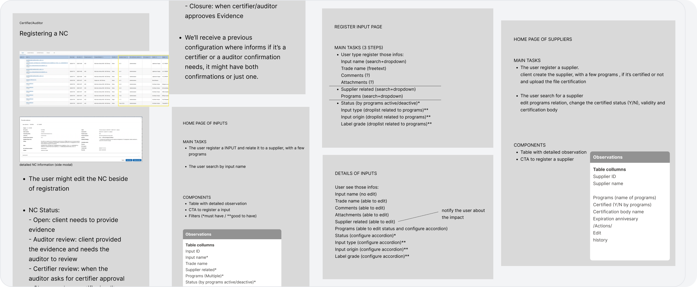
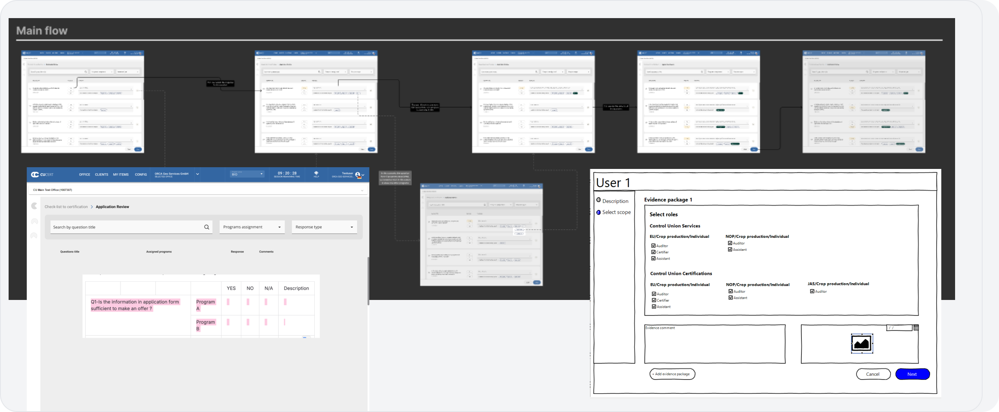
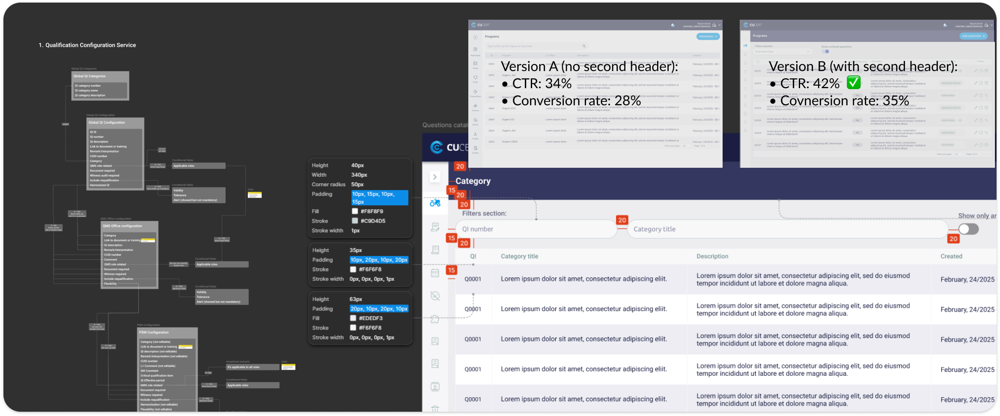

Como simplificar uma jornada B2B em um sistema legado de alta complexidade?
Redesenhei os fluxos de certificação, dei início ao design system fundacional da empresa e estruturei o processo de hand-off com o time de desenvolvimento.
Contexto
A Peterson Solutions certifica processos no agronegócio. O sistema era usado diariamente por auditores, técnicos e gestores com rotinas e níveis de experiência muito diferentes entre si.
O desafio
O projeto surgiu porque o custo operacional tinha se tornado visível: suporte sobrecarregado, dificuldade em reter auditores e ciclo de desenvolvimento lento pela falta de componentes reutilizáveis.
O processo principal de certificação exigia 47 cliques e 23 minutos. Não porque o processo em si fosse complexo, mas porque a interface não seguia a lógica de quem executava a tarefa.
O que eu fiz
Redesenhei o fluxo na ordem em que o usuário pensa, não na ordem em que o sistema foi construído. O design system foi definido antes de qualquer tela de alta fidelidade. A pressão era para mostrar progresso visual rápido, mas sem tokens e componentes estabelecidos qualquer interface gerada seria inconsistente com o que engenharia já construía em paralelo.
O resultado
Satisfação de 2.1 para 4.2. Chamados de suporte de 87 para 23 por mês. Tempo de conclusão do processo principal com 62% menos cliques. Tempo de implementação de novas features de 3 semanas para 2 semanas.
Intro
Dados
O levantamento foi feito em conjunto com o time de requisitos, que conduziu entrevistas com usuários, e com sessões colaborativas com stakeholders onde esse material foi analisado.
Dois pontos direcionaram o projeto a partir daí.
O problema não era o número de cliques. Era a falta de feedback durante o processo. Os usuários não sabiam se tinham feito algo certo até receber um erro algumas etapas depois.
O segundo ponto foi sobre perfis. Auditores experientes e técnicos em treinamento executavam a mesma tarefa com caminhos mentais completamente diferentes. A interface ignorava isso e tratava os dois da mesma forma.
cliques no processo principal
tempo médio para conclusão do cadastro
satisfação inicial
Problema
-
01
Fluxos Complicados e Longos
Processo de certificação exigia média de 47 cliques e 23 minutos para conclusão, com alta taxa de erros e retrabalho por falta de validações contextuais e feedback claro.
-
02
Interface Legada e Confusa
Usuários reportavam apenas 2.1/5 de satisfação. Principais queixas: dificuldade em encontrar funcionalidades e compreender status dos processos.
-
03
Ausência de Padronização
Sem design system, o desenvolvimento criava componentes de forma isolada, gerando inconsistências visuais e que dificultavam a manutenção do código.
Solução
Três pilares fundamentais que transformaram a experiência do produto e a eficiência do time.
Mapeamento com o time de requisitos
Foram diversas conversas, facilitações e reuniões com o time de requisitos e stakeholders para alinharmos as definições de negócios.
O entendimento da jornada pela perspectiva do usuário se tornou o fator decisivo no momento de definir a função/tarefa que a tela tinha como objetivo em executar.

Simplificação de Fluxos
Reestruturei completamente os fluxos de certificação, recomeçando o entendimento da jornada no wireframe, reduzindo etapas desnecessárias e reorganizando informações com base nos padrões mentais dos usuários.
O processo principal foi reduzido de 47 para 18 cliques, com hierarquia visual clara e feedback contextual em cada etapa.

Processo de Hand-off Estruturado
Criei um processo de hand-off que transformou a colaboração entre design e desenvolvimento, com documentação detalhada de specs técnicas e assets organizados para produção.
Reuniões de alinhamento semanais entre design e engenharia reduziram retrabalho em 71% e aceleraram a implementação das novas telas.

A experiência problemática resultava em queda na produtividade dos usuários, aumento significativo em chamados de suporte (média de 87 tickets/mês), dificuldade na contratação e retenção de auditores, além de lentidão no ciclo de desenvolvimento por falta de componentes reutilizáveis e guidelines claras.
Esses números deixaram claro que o problema não era só de usabilidade, mas um risco direto para o negócio — e foi isso que tornou o redesign uma prioridade estratégica da empresa.
Impacto
Resultados Mensuráveis
Tempo de Conclusão de Tarefas
Fluxos otimizados reduziram drasticamente o tempo necessário para completar processos principais.
Velocidade de Desenvolvimento
Redução no tempo de implementação de novas features graças ao design system e componentes reutilizáveis.
Satisfação do Usuário
Aumento de 2.1 para 4.2 na avaliação de satisfação dos usuários finais após redesign.
Retrabalho em Desenvolvimento
Documentação clara e hand-off estruturado minimizaram ajustes e correções pós-implementação.
Este case study contém informações de projetos desenvolvidos sob acordos de confidencialidade (NDA). Alguns detalhes sensíveis foram alterados ou omitidos para respeitar esses compromissos. O conteúdo apresentado aqui reflete minhas próprias análises e contribuições e não representa necessariamente a posição oficial das empresas envolvidas.
Obrigado pelo seu tempo!